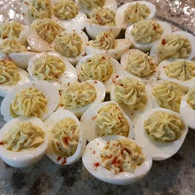

Deviled Eggs

Description
Hard boiled eggs stuffed with creamy blend of mayonnaise, Dijon mustard and rice wine vinegar. Fresh dill and garlic powder add a delightful flavor.
Ingredients
-
6 hard boiled eggs, halved
-
1 teaspoon rice wine vinegar
-
1/2 teaspoon chopped fresh dill
-
1 teaspoon Dijon mustard
-
1/4 teaspoon garlic powder
-
1/8 teaspoon salt
-
12 sprigs fresh dill
Steps
-
Scoop egg yolks into a bowl and set egg whites aside.
-
Mash yolks, mayonnaise, vinegar, 1/2 teaspoon chopped dill, Dijon mustard, garlic powder, and salt.
-
Spoon yolk mixture into egg whites. Garnish with dill sprigs. Refrigerate until ready to serve, cover for best preservation.
Return Home